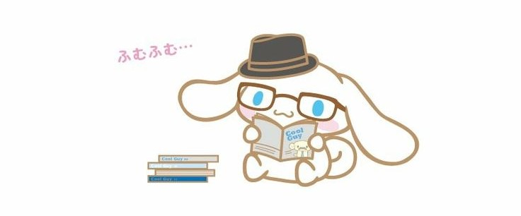

Mas Información ⊂(･ω･*⊂):
Navega por nuestro catálogo cuidadosamente seleccionado y descubre una amplia gama de géneros, desde la fantasía
épica hasta la poesía contemporánea. Ya sea que busques escapar a mundos imaginarios, explorar nuevas culturas o
profundizar en temas de actualidad, en Star Book encontrarás exactamente lo que necesitas para satisfacer tu sed
de conocimiento y aventura.
Pero en Star Book, nuestra misión va más allá de simplemente ofrecerte libros. Nos esforzamos por brindarte una
experiencia de compra excepcional, donde cada interacción con nuestro equipo de servicio al cliente sea una
oportunidad para hacer que tu experiencia sea aún más memorable.
Únete a nuestra vibrante comunidad de lectores y participa en nuestros eventos, clubes de lectura y actividades
exclusivas. Aquí, encontrarás un lugar donde compartir tus pasiones, intercambiar ideas y hacer conexiones
significativas con personas que comparten tu amor por la lectura.
En Star Book, el viaje literario es infinito y emocionante. Así que adelante, adéntrate en nuestro universo d e
historias y descubre el placer eterno de perderse en un buen libro. Tu destino literario te espera en Star Book.
(つ≧▽≦)つNuestro Compromiso con la Comunidad:
En Star Book, creemos en el poder transformador de la lectura para construir comunidades más fuertes y
conectadas. Es por eso que nos comprometemos a fomentar una comunidad de lectores apasionados en todo el mundo a
través de programas de promoción de la lectura, colaboraciones con organizaciones sin fines de lucro y eventos
culturales. Queremos hacer que la lectura sea una parte integral de la vida de las personas y ayudar a inspirar
una pasión duradera por la literatura en todas sus formas.